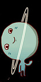
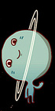

Марс
 Марс — планета земной группы с разреженной атмосферой (давление у поверхности в 160 раз меньше земного). Особенностями поверхностного рельефа Марса можно считать ударные кратеры наподобие лунных, а также вулканы, долины, пустыни и полярные ледниковые шапки наподобие земных.
Марс — планета земной группы с разреженной атмосферой (давление у поверхности в 160 раз меньше земного). Особенностями поверхностного рельефа Марса можно считать ударные кратеры наподобие лунных, а также вулканы, долины, пустыни и полярные ледниковые шапки наподобие земных.
 У Марса есть два естественных спутника — Фобос и Деймос (в переводе с древнегреческого — «страх» и «ужас» — имена двух сыновей Ареса, сопровождавших его в бою), которые относительно малы и имеют неправильную форму.
У Марса есть два естественных спутника — Фобос и Деймос (в переводе с древнегреческого — «страх» и «ужас» — имена двух сыновей Ареса, сопровождавших его в бою), которые относительно малы и имеют неправильную форму.
Начиная с 1960-х годов, непосредственным исследованием Марса с помощью АМС занимались СССР (программы «Марс» и «Фобос»), США (программы «Маринер», «Викинг», «Mars Global Surveyor» и другие) и Европейское космическое агентство (программа «Марс-экспресс»).